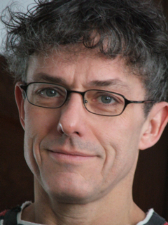

BACKGROUND
 Though I began my career as a video Writer/Producer with Eastman Kodak Company, my most relevant experience is grounded by my work as Director of the Professional Production Unit at the Roy H. Park School of Communications, Ithaca College. The position brought me into regular contact with members of the college community — students, faculty and administrators — and involved developing, managing and producing video pieces for clients throughout the college and in the regional business environment. I also established and supported a Digital Media Lab for non-linear video editing, graphic design and interactive media development. The fundamental binary goal of the “Pro Unit” was to provide professional work experience for students in the Film, Television and Corporate Communications departments while supporting the wider academic and recruitment missions of the college. Several of our video projects won awards in professional media contests (please see resume) — a tribute to the high caliber of work our student production teams were able to deliver.
After moving to Washington I spent several years working as a freelance instructional designer and web developer with various educational media organizations. Most of these projects were developed with Adobe Director, and I was responsible for scriptwriting, storyboarding, programming and budgeting. I was able to leverage these skills for the classroom setting as a technology educator at the Maret School, where I developed and taught courses in digital video production, web development and computer literacy. Before returning to school for a Nursing degree (which built on my long-standing interest in science and healthcare), I also worked as a grip/gaffer/DP for local production houses, specializing in documentaries, commercials and shorts. Most recently I have been employed at National Rehabilitation Hospital (Medstar NRH) as a Registered Nurse with a certification in Rehabilitation Nursing.